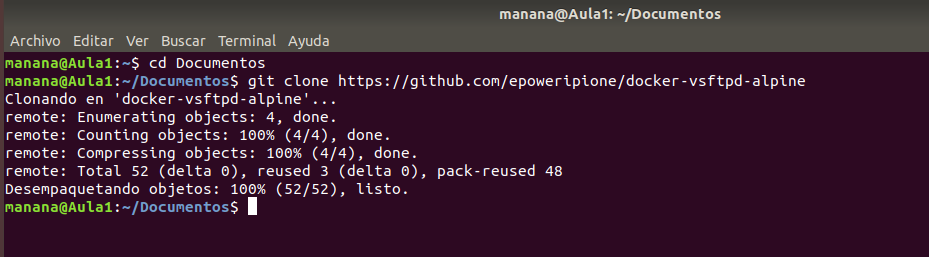
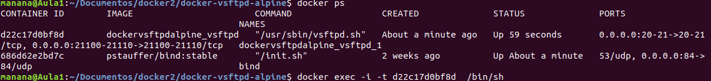
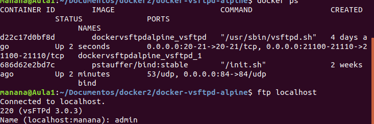

Con las instrucciones de este repositorio DockerHub: https://github.com/epoweripione/docker-vsftpd-alpine

Ponemos el comando git clone https://github.com/epoweripione/docker-vsftpd-alpine para poder descargarnos los archivos que hay en ese repositorio.
Crea un contenedor llamado app-ftpd en tu host y configura el mismo para exponer los puertos del FTP en el anfitrión.

He creado el contenedor como se ve ahí con el comando docker-compose -f docker-compose.yml up -d una vez lo ejecutas en la terminal se crea el contenedor con la configuración correspondiente
Conéctate desde el anfitrión u otro host de tu red LAN.
Pongo ftp localhost y ya me accede a localhost.
